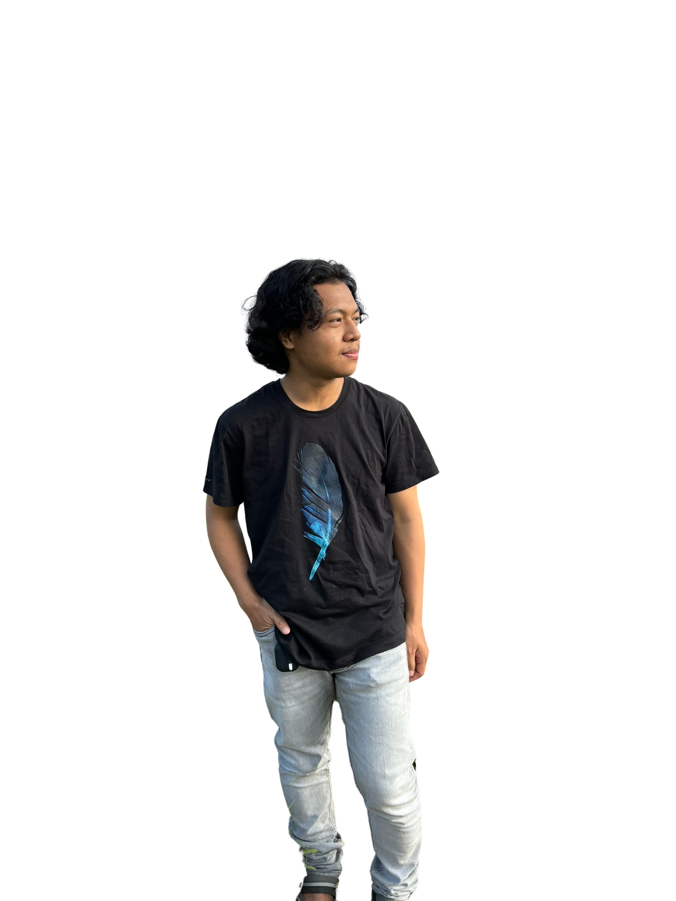

Hi, It's Me
I'm kifff
Saya mahasiswa aktif Fakultas Teknik Program Studi
Teknik Informatika Institut Teknologi Padang

Hi, It's Me
Saya mahasiswa aktif Fakultas Teknik Program Studi
Teknik Informatika Institut Teknologi Padang